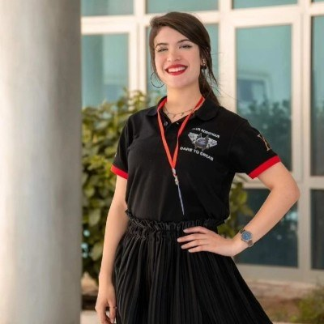

Biography

I am an electrical engineer from Tunisia, graduating from the École Nationale d’Ingénieurs de Monastir (ENIM) in 2026. After the preparatory cycle in Monastir, I joined ENIM’s engineering cycle in electrical engineering in 2023.
Power electronics is the field I am most drawn to. During my final-year project at the LAPLACE laboratory (CNRS / INP-ENSEEIHT, Toulouse), I designed a transformerless partial-power DC-DC converter for a 48 V, 5.5 kW bus, covering simulation, component sizing, the four-layer power PCB and the thermal study.
Earlier internships took me through embedded firmware on STM32, energy-measurement electronics and ESP32-based data acquisition. I also trained fellow students in PCB design with Altium Designer through the ENIM Team.
I am motivated, rigorous and adaptable, and I want to keep growing technically on innovative engineering projects. I speak Arabic (native), French and English fluently.
Education
- National Engineering Diploma, Electrical Engineering
École Nationale d’Ingénieurs de Monastir (ENIM), Tunisia - Preparatory cycle for engineering studies
Institut Préparatoire aux Études d’Ingénieur de Monastir - Baccalauréat
Lycée Pilote de Kairouan
Technical skills
| Programming | C, C++, Python, Embedded C |
|---|---|
| Microcontrollers | STM32, ESP32, Arduino |
| Protocols | UART, SPI, I²C, CAN |
| PCB design | Altium Designer, KiCad |
| Simulation | PLECS, LTspice, MATLAB/Simulink, Proteus |
| Tools | STM32CubeIDE, Arduino IDE |
Languages
Arabic (native) · French (fluent) · English (fluent)